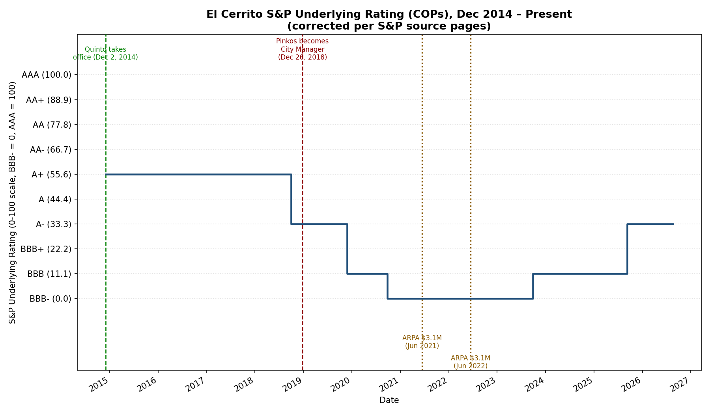
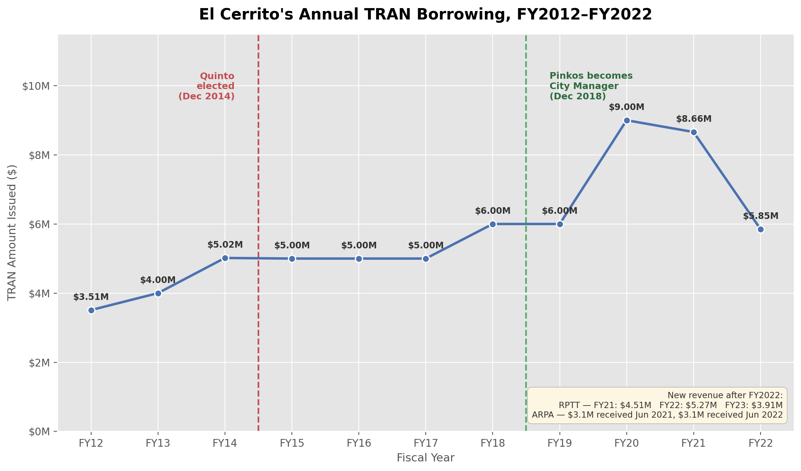

A sourced record of El Cerrito's credit rating history and audited financial condition, drawn directly from S&P Global Ratings publications and the City's audited annual financial reports (CAFRs/ACFRs).
S&P Global Ratings' underlying rating (SPUR) on El Cerrito's certificates of participation (COPs) is the cleanest available measure of the city's general financial health, independent of any specific bond issuance.

| Date | Action | Rating |
|---|---|---|
| Dec 2, 2013 | Lowered (application of new local GO criteria) | AA− → A+ |
| Oct 1, 2018 | Lowered — weakened budgetary flexibility | A+ → A− |
| Nov 26, 2019 | Lowered two notches — deteriorating budgetary flexibility, second consecutive going-concern audit opinion | A− → BBB |
| Sept 24, 2020 | Lowered — negative general fund reserves, COVID-19 impact | BBB → BBB− |
| Sept 29, 2023 | Raised — resolution of going-concern opinions, restored structural balance | BBB− → BBB |
| Sept 9, 2025 | Raised — sustained structural balance, robust reserves | BBB → A− (current) |
Source: S&P Global Ratings rating action publications, each dated as shown above. Ratings shown are the underlying rating (SPUR) on El Cerrito's certificates of participation (COPs). A related but separate instrument — El Cerrito Public Financing Authority sales tax revenue bonds — follows its own, similar rating track and reached A+ as of September 2025.
A "going concern" opinion is an auditor's formal statement of substantial doubt about a government's ability to meet its financial obligations. El Cerrito's CAFRs/ACFRs contain this language across a specific multi-year period, documented year by year below.
| Fiscal Year | Going-Concern Language |
|---|---|
| 2012 | Absent |
| 2013 | Present |
| 2014 | Present |
| 2015 | Absent |
| 2016 | Absent |
| 2017 | Present |
| 2018 | Present |
| 2019 | Present |
| 2020 | Present |
| 2021 | Absent — explicitly discontinued |
| 2022–2025 | Absent (standard auditor-responsibility language only; not a City-specific finding) |
"The accompanying financial statements have been prepared in conformity with accounting principles generally accepted in the United States of America, which contemplate continuation of the City as a going concern. However, as of June 30, 2014, the General Fund's unrestricted cash balance was only $1… Although the City continues to issue Tax Revenue Anticipation Notes to supplement cash temporarily during the fiscal year, if deficit spending continues, it reduces the likelihood that the City will be able to continue as a going concern."
FY2014 CAFR, Independent Auditor's Report, "Emphasis of Matters," pages 2–3. Auditor: Maze & Associates. FY2013 CAFR contains substantially similar language (page 3); General Fund unrestricted cash represented under 5 days of expenditures that year; FY2014's total citywide unrestricted cash was $40,384.
No going-concern language present in either year's CAFR.
"The accompanying financial statements have been prepared assuming that the City will continue as a going concern. As discussed in Note 21 to the financial statements, the City's General Fund has a very limited fund balance that indicates that the City may not be able to continue as a going concern. These conditions raise substantial doubt about its ability to continue as a going concern…"
FY2017 and FY2018 CAFRs, Independent Auditor's Report, "Emphasis of Matter Regarding Going Concern," referencing Note 21. Auditor: Badawi and Associates, CPAs. FY2017 available fund balance: deficit $186,227. FY2018: deficit $2,233,507.
"The City's unassigned fund balance in the General Fund was a deficit of $1,707,620, which represents a $525,887 improvement over… the prior fiscal year."
FY2019 CAFR, Independent Auditor's Report ("Emphasis of Matter Regarding Going Concern") and Note 20, "GOING CONCERN." Auditor: Badawi and Associates, CPAs (report dated January 31, 2020). Note: the auditor's letter refers to "Note 21," but the corresponding note in this year's financial statements is numbered Note 20 — an apparent carryover drafting error from the prior year's template, not a discrepancy in the underlying finding.
"The City's unassigned fund balance in the General Fund was a deficit of $1,777,532."
FY2020 CAFR, Independent Auditor's Report ("Emphasis of Matter Regarding Going Concern") and Note 21, "GOING CONCERN." Auditor: Badawi & Associates. The FY2020 CAFR separately states elsewhere in its narrative that the City had been "on the going concern watch list since FY 2017, the first year that the City changed auditors in about a decade" — the City's own characterization of the period.
"As a result of the fund balance at 19% of estimated expenditures and a positive trend in both revenue and expenditures, the 'Going Concern' designation by Badawi and Associates is no longer included in the FY 2021 ACFR."
FY2021 ACFR, Management's Discussion and Analysis. Auditor: Badawi and Associates (same auditor as the prior four years; the going-concern designation ended before the subsequent auditor change).
No going-concern designation or dedicated note in any of these four years. Auditor of record changed to Chavan & Associates, LLP beginning with the FY2022 ACFR. These CAFRs contain only standard, boilerplate auditor-responsibility language required under current audit standards (SAS 132) in every modern audit report — not a City-specific finding — and include no "Emphasis of Matter Regarding Going Concern" heading and no dedicated going-concern note.
All years above verified directly against primary-source CAFR/ACFR PDFs.
In March 2021, the California State Auditor designated El Cerrito a "high risk" local government in Report 2020-803, titled "Excessive Spending and Insufficient Efforts to Address Its Perilous Financial Condition Jeopardize the City's Ongoing Fiscal Viability."
The audit found that El Cerrito spent more than it received in general fund revenue in eight of the eleven fiscal years from 2009–10 through 2019–20, and that its general fund reserves — built up to a peak of $2.6 million in FY2011–12 — were fully depleted by FY2016–17 and remained negative through FY2019–20. The city's own reserve policy requires a minimum of 10% of expenditures; it did not meet that threshold in any of the eleven years reviewed.
| Fiscal Year | Reserves as % of Annual Expenditures |
|---|---|
| 2009–10 | 7.3% |
| 2010–11 | 9.2% |
| 2011–12 | 8.1% |
| 2012–13 | 4.1% |
| 2013–14 | 3.5% |
| 2014–15 | 4.4% |
| 2015–16 | 5.4% |
| 2016–17 | (0.5)% |
| 2017–18 | (6.1)% |
| 2018–19 | (4.1)% |
| 2019–20 | (4.4)% |
Source: Report 2020-803, Table 1, based on the City's audited comprehensive annual financial reports, FY2009–10 through FY2019–20. GFOA's recommended minimum is 17% (two months of expenditures); El Cerrito's own policy sets a 10% minimum.
The report also found the city relied on short-term loans (TRANs) every year since FY2012–13 to cover operating costs, with the loan amount growing from $5 million in FY2015–16 to a peak of $9 million in FY2019–20. The associated interest rate roughly doubled over that span, and annual interest costs more than tripled. The auditor's own comparison noted that El Cerrito's credit rating deteriorated from an AA− rating in 2016 to a BBB− rating in 2020, tracking the decline in reserves.
Other findings included a net pension liability of $65.8 million as of June 2020 (a 67% increase from FY2014–15), and a capital/maintenance backlog of $245.4 million identified in the FY2020–21 budget, of which only $21.4 million was funded through FY2024–25 — a rate the auditor noted would take more than 50 years to address at that pace. The audit also identified budget-monitoring weaknesses, including a finding that finance department staff routinely overrode internal spending-limit alerts without director-level review.
Source: California State Auditor, Report 2020-803, "City of El Cerrito: Excessive Spending and Insufficient Efforts to Address Its Perilous Financial Condition Jeopardize the City's Ongoing Fiscal Viability," issued March 16, 2021. Full report | City's posted response page
A Tax (and Revenue) Anticipation Note (TRAN) is short-term borrowing a city takes out to cover payroll and expenses before property tax revenue arrives. El Cerrito issued one every year for at least eleven consecutive years.

Source: Notes to the City's audited financial statements (CAFRs/ACFRs) and City Council staff reports, each fiscal year. New revenue sources shown (Real Property Transfer Tax, ARPA funds) coincide with the TRAN's discontinuation after FY2022.
This page reports the documented financial and credit history without attributing responsibility to any individual. All figures are drawn directly from primary source documents: S&P Global Ratings publications and the City of El Cerrito's audited annual financial reports.